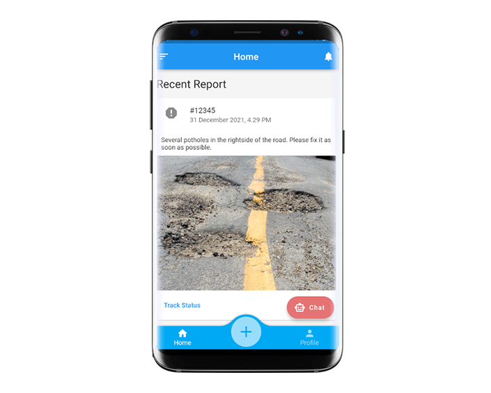

Learned to built a prototype with design thinking approach. This mobile app, EasyReport is designed for citizens to make report on maintenance of roads, highways, buildings or structures. The prototype of this app is develop using Flutter&Dart.
Sep 2021 - Feb 2022
Software Engineer Student
Information Technology And Entrepreneurship
A reporting platform for citizens to make report on maintenance of roads, highways, buildings or structures.
An important function of the Ministry of Works (MOW) is the maintenance of road and highway infrastructure, government buildings (such as schools, hospitals, clinics, quarters, etc), and structures (such as bridges, flyovers, tunnels, and drains). The number and types of assets under the ministry are large and geographically dispersed and varied. An effective and timely reporting platform from citizens can contribute to the better maintenance of these public assets.
Online reporting channel for citizens to suggest maintenance of roads, highways, buildings or structures.
Provide location service such as Google Maps for choosing location
Provide a list of frequently occur problems to choose from
Media uploading for the report of breakdown (images/videos)
Report status tracking
AI chat bot for inquiry
Android Studio (IDE)
Flutter
Github
Dart
-
Design Thinking
In this course we learned and carried some process of design thinking. However, we did not meet real users in empathize phase, and also did not carry out test phase. We figure out problem based on assumption in empathize phase, then define the real cause of the problem in define phase.
In ideate phase, we brainstorm solution as much as possible, then we pick the solution that can be implemented digitally, and also based on feasibility. Lastly, we build the prototype using Flutter & Dart.